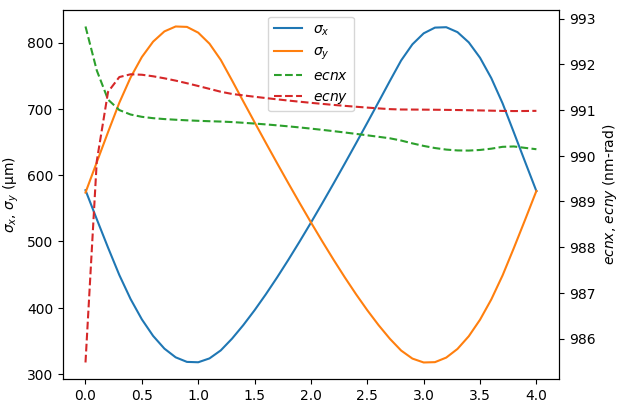
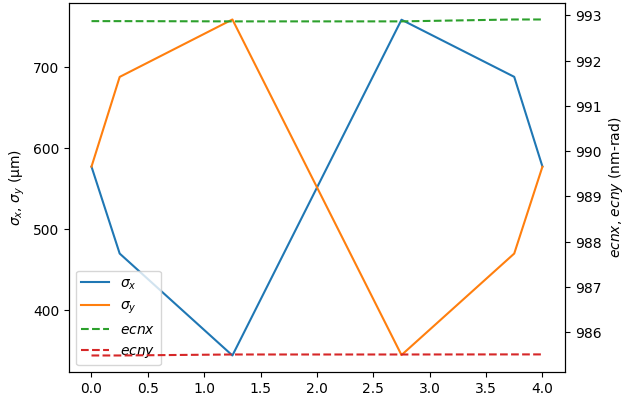

Getting started with SIMBA
Lattice Definition
Accelerator lattices in SIMBA are derived from the LAURA
standard lattice format. This is a schema for providing generic descriptions of accelerator elements and
layouts; see the LAURA documentation for more details.
Given that this format is designed to capture all relevant information about accelerator elements,
and that it includes a built-in translator module for exporting lattice files to various simulation codes,
it can be used within SIMBA for loading, modifying, writing and exporting input and lattice
files for simulation codes.
We would be remiss not to begin with a simple FODO:
from laura.models.element import Quadrupole, Marker # noqa E402
from laura.models.elementList import MachineModel # noqa E402
from laura.Exporters.YAML import export_machine
from laura import LAURA # noqa E402
outdir = "/path/to/lattice/directory"
m1 = Marker(
name="M1",
machine_area="FODO",
hardware_class="Marker",
physical={
"middle": {
"x": 0.0,
"y": 0.0,
"z": 0.0,
}
}
)
# Make some quads and add them to the machine
q1f = Quadrupole(
name="QUAD1F",
machine_area="FODO",
magnetic={
"length": 1.0,
"k1l": -1,
},
physical={
"length": 1.0,
"middle": {
"x": 0.0,
"y": 0.0,
"z": 0.75,
},
},
)
q1d = Quadrupole(
name="QUAD1D",
machine_area="FODO",
magnetic={
"length": 1.0,
"k1l": 1.0,
},
physical={
"length": 1.0,
"middle": {
"x": 0.0,
"y": 0.0,
"z": 3.25,
}
},
)
m3 = Marker(
name="M3",
machine_area="FODO",
hardware_class="Marker",
physical={
"middle": {
"x": 0.0,
"y": 0.0,
"z": 4.0,
}
}
)
sections = {
"sections": {
"FODO": ["M1", "QUAD1F", "QUAD1D", "M3"],
}
}
layouts = {
"default_layout": "line1",
"layouts": {
"line1": ["FODO"],
}
}
machine = LAURA(element_list=[m1, q1f, q1d, m3], layout=layouts, section=sections)
export_machine(path=f"{outdir}/Lattice", machine=machine, overwrite=True)
Generating an input beam
The simulation requires a macroparticle distribution to run. This can be generated using the frameworkGenerator as follows:
from simba.Codes.Generators imoutdirport frameworkGenerator
import simba.Modules.Beams as rbf
gen = frameworkGenerator(
global_parameters={"master_subdir": outdir},
filename="M1.openpmd.hdf5",
initial_momentum=5e6,
sigma_x=1e-4,
sigma_px=1e3,
sigma_y=1e-4,
sigma_py=1e3,
sigma_z=1e-3,
sigma_pz=1e3,
gaussian_cutoff_x=3,
gaussian_cutoff_y=3,
gaussian_cutoff_z=3,
gaussian_cutoff_px=3,
gaussian_cutoff_py=3,
gaussian_cutoff_pz=3,
charge=100e-12,
)
gen.write()
beam = rbf.beam(filename=f"{outdir}/M1.openpmd.hdf5")
Defining the Lattice Simulation
With the initial beam distribution and lattice now defined, the simulation can be prepared.
This involves passing a group of settings to SIMBA, including:
The
filesto run; this defines the start and end element (or longitudinal position) in the lattice and creates the sections;The simulation code used to run each section;
Additional settings, such as the enabling of collective effects, or transverse matching parameters for the initial beam;
Settings for beam generation;
Locations for
LAURAfiles.
These are all read in when SIMBA is instantiated. The example below shows how to create these settings in python;
alternatively, one can create a settings file in YAML and pass that in; see Loading a lattice:
from simba.Framework_Settings import FrameworkSettings
settings = FrameworkSettings()
files = {}
for sec, elems in machine.sections.items():
files.update(
{
sec: {
"code": "ocelot",
"charge": {
"space_charge_mode": "False",
},
"input": {
"twiss": {
"beta_x": 3.2844606,
"alpha_x": 2.48956886,
"nemit_x": 1e-6,
"beta_y": 3.2846606,
"alpha_y": -2.48956886,
"nemit_y": 1e-6,
},
},
"output": {
"start_element": elems[0].name,
"end_element": elems[-1].name,
},
}
}
)
settings.files = files
settings.layout = machine.layout
settings.section = {"sections": {name: e.names for name, e in machine.sections.items()}}
settings.element_list = f"{outdir}/Lattice"
This lattice definition would produce a lattice file (called FODO.py) for running in the Ocelot beam tracking code.
If the MachineModel defined above consisted of sequential sections rather than just a FODO, these would then
be added automatically to the tracking.
Running SIMBA
With everything now prepared, SIMBA can be used to track through the simple FODO lattice.
Note that, in order to run executables (i.e. ASTRA, ELEGANT) rather than simulation codes based only on
python (i.e. Ocelot, Cheetah etc.), the SimCodes directory must be set up; see
SimCodes.
import simba.Framework as fw
from simba.Framework import load_directory
framework = fw.Framework(
machine=machine,
simcodes='/path/to/simcodes/',
directory=f"{outdir}/ocelot",
clean=True,
verbose=True
)
framework.loadSettings(settings=settings)
framework.global_parameters["beam"] = beam
framework["FODO"].lsc_enable = False
framework["FODO"].csr_enable = False
framework.set_lattice_prefix("FODO", "../")
framework.track()
fwdir = load_directory(f"{outdir}/ocelot")
fwdir.plot(xkey="z", ykeys=['sigma_x', 'sigma_y'], ykeys2=["ecnx", "ecny"])
Which produces the plot in Fig. 1:

Fig. 1 Output of simple FODO tracking in Ocelot
The same lattice can also be tracked using a different code as follows:
Producing the output in Fig. 2:

Fig. 2 Output of simple FODO tracking in ELEGANT